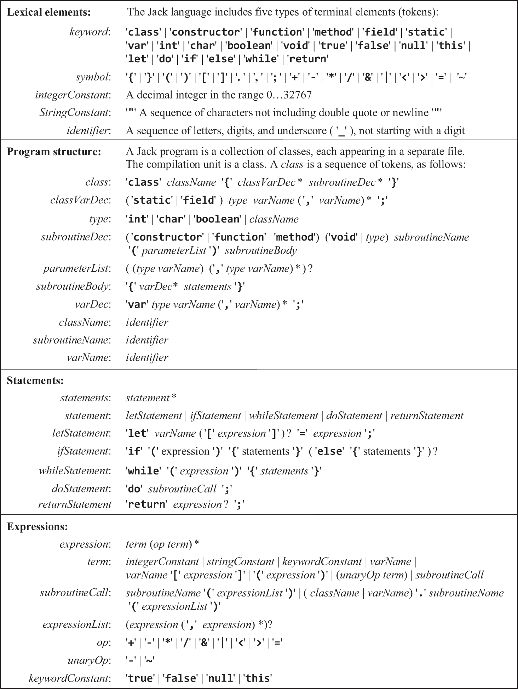
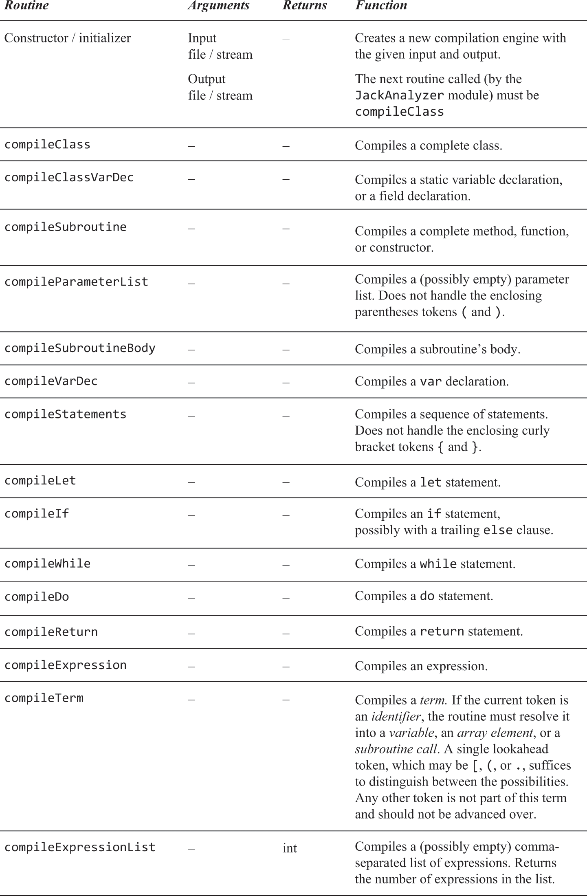

9.1 Compiler Syntax
A compiler is a program that translates programs from a source language Jack into a target language Hack VM
- We parse code syntax to understand it’s semantics and reveal intent
Background
- Compilation consists of two stages:
- Syntax Analysis - understanding the semantics implied by the source code (divided into two more stages)
- Tokenising - grouping input characters into a stream of tokens
- Parsing - Matching token stream with language grammar
- Code Generation - reconstructing the semantics in VM code
- Syntax Analysis - understanding the semantics implied by the source code (divided into two more stages)

Tokenising
- Jack has a set of tokens or words that form the lexicon
- Keywords -
class, while, for, etc - Symbols -
+, <, etc - Integer Constants -
17, 214, etc - String Constants -
”FAQ”, “NAME”, etc - Identifiers - textual labels for naming variables, classes, functions
- Keywords -
- These tokens are treated as the simplest elements in a program and are fed 1 by 1 into the compiler for code generation
- Essentially, we turn a stream of characters into a stream of tokens

- There are specific XML entities for some special characters:
Grammar
- A set of rules that describe legal examples of a language, each consisting of a left and a right side
- Left side specifies the rule’s name and is not part of the language itself
- Right side describes the pattern of tokens that the rule specifies
- This pattern goes from left to right and consists of
terminals, non terminals and qualifiers- Terminals are tokens
- Nonterminals are other rules
- Qualifiers are represented by
|, *, ?, (, )
- This pattern goes from left to right and consists of

|means or*denotes something happens multiple times?means 0 or 1 times
Parsing
- Grammar is recursive. Rules can contain more rules, the result of which affects the rule before it.
- This correspondence can be represented with a data structure called a parse tree

- Parse output (this tree) is denoted in XML, kinda like HTML markup

Parser
- Accepts a stream of tokens as input and outputs a parse tree (XML)
- Algorithms used to create parse trees - recursive descent parsing
- For each rule, there exists routines to compile those tokens into a parse tree
- Each
compilexxxroutine should get from the input, and handle, all the tokens that make up xxx, advance the tokenizer exactly beyond these tokens, and output the parse tree of xxx.
Example - Parsing while
while ( expression ) { statement* )

Jack Specification
Grammar

'xxx' : represents language tokens that appear verbatim
xxx : represents names of terminal and nonterminal elements
( ) : used for grouping
x | y : either x or y
x y : x is followed by y
x ? : x appears 0 or 1 times
x * : x appears 0 or more times
Syntax Analyser
- Performs tokenising and parsing
- Accepts a single command line arg
Jack Implementation
- Based on three modules
JackAnalyzer: main program that sets up and invokes the other modulesJackTokenizer: tokenizerCompilationEngine: recursive top down parser
JackTokenizer
- Ignores comments / whitespace
- Allows parser to access input stream one token at a time
- Parses and provides the type of each token

CompilationEngine
- Emits a structured representation of the input source code wrapped in XML tags
- Once code generation has been introduced, instead of XML tags it will become VM code
- Gets input from the
JackTokenizerand emits output to an XML file- Output is generated by a series of
compilexxxroutines, each of which are designed to handle of specific language constructsxxx compilexxxis only called if the current token isxxx
- Output is generated by a series of
- Some grammar rules don't have a corresponding compilation model
type, className, subroutineName, varName, statement, subroutineCall
Token Lookahead
- For each
compilexxxbehavior, the maximum recursive depth is 1, meaning the current token can indicate which routine to call next. -
Exception: Parsing a "term" in an expression or a subroutine call. Here, only the current token is often insufficient.
-
y:- Recognize "y" as an identifier.
- Peek at next token (it's "+").
- Determine "y" is a standalone variable.
-
arr[5]:- Recognize "arr" as an identifier.
- Peek at next token (it's
[). - Determine
arr[5]is an array element.
-
p.get(row):- Recognize "p" as an identifier.
- Peek at next token (it's ".").
- Parse further to determine "
p.get(row)" is a method call on the object "p"
-
count():- Recognize "count" as an identifier.
- Peek at next token (it's "(").
- Determine "count()" is a method call.
-
Math.sqrt(dist):- Recognize "Math" as an identifier.
- Peek at next token (it's ".").
- Parse further to determine "
Math.sqrt(dist)" is a method call.
-
2:- Recognize "2" as a constant. No ambiguity, so no lookahead needed.
-
By peeping one token ahead, the parser can easily determine the nature and function of the current token within the expression.

JackAnalyzer
- Main program that drives the syntax analysis process
- Calls
JackTokenizerandCompilationEngine
- Calls
- For each
xxx.jackfile:- Create a
JackTokenizerfrom thexxx.jackinput file - Create an output file
xxx.xml - Uses the
JackTokenizerandCompilationEngineto parse the input and write the parsed code to the output
- Create a
Examples